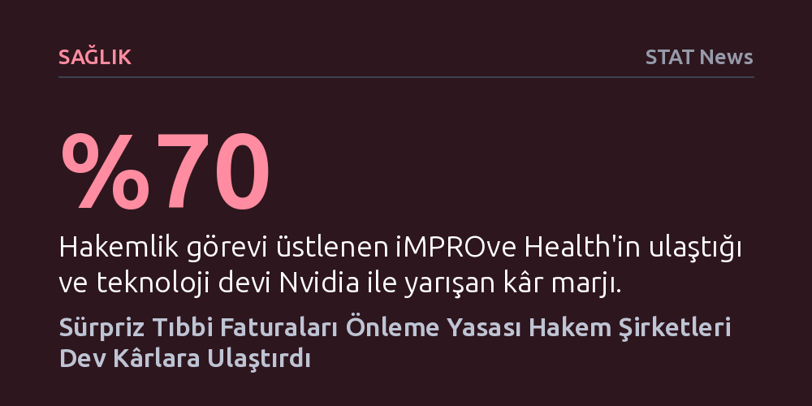

SAGLIK · STAT News · 2026-10-20
ABD'de hastaları beklenmedik masraflardan korumak için çıkarılan yasa, sigortacılar ile sağlık kuruluşları arasındaki uyuşmazlıkları çözen hakem şirketlere devasa kârlar sağladı. Batmanın eşiğindeki iMPROve Health, bu hakemlik rolüyle gelirini 13 kat artırarak yüzde 70 kâr marjına ulaştı.
Sağlık harcamalarını düşürmeyi amaçlayan iyi niyetli yasal düzenlemelerin, denetimsiz hakemlik mekanizmaları üzerinden nasıl beklenmedik bir rant kapısına dönüşebileceğini gösteriyor.

ABD'nin Michigan eyaletinde kâr amacı gütmeyen bir kuruluş olarak faaliyet gösteren iMPROve Health, çok değil birkaç yıl önce varoluşsal bir mali krizle karşı karşıyaydı. Kurum, geçmiş yıllardaki kayıplarının üzerine yalnızca 2022 mali yılında 2 milyon doları aşkın zarar kaydetmiş ve bu kayıp toplam gelirinin üçte birinden fazlasını eritmişti. Bütçe kesintilerine gitmek zorunda kalan yönetim, masrafları kısmak adına ofisini kapatıp uzaktan çalışma modeline geçti; hatta şirketin satılması ya da başka bir kurumla birleşmesi dahi masaya yatırıldı. Kurulun eski üyelerinden Richard Murdock o günleri, “Birleşip birilerinin bizi satın aldığı bir organizasyon mu olmalıyız diye konuştuk” sözleriyle özetliyordu.
Ancak bu çöküş tablosunun üzerinden geçen üç yılın ardından kurum, piyasa analistlerini hayrete düşüren bir finansal patlamaya imza attı. Gelirini 13 katına çıkaran iMPROve Health, teknoloji devi Nvidia'nın rekor kârlılığıyla yarışacak biçimde yüzde 70 kâr marjı yakaladı. Kâr amacı gütmeyen bir yapıyı batmanın eşiğinden alıp devasa bir finansal güce ulaştıran bu dönüşümün ardında ise devletten aldıkları yeni bir rol bulunuyordu: Sağlık kuruluşları ile sigorta şirketleri arasındaki yüksek meblağlı ödeme anlaşmazlıklarında kazananı belirlemek.
Söz konusu kâr patlamasının temelinde, ABD'de hastaları acil tıbbi durumlarda ağ dışı doktor veya hastanelerden gelen fahiş ödemelerden korumak amacıyla yürürlüğe konan Sürpriz Fatura Yasası (No Surprises Act) yer alıyor. Düzenleme, daha önce doğrudan hastaya yansıtılan beklenmedik masrafları hastanın üzerinden almayı başardı. Ancak bu durum, sağlık hizmeti sunucuları ile özel sigorta şirketleri arasında hangi tarafın ne kadar ödeme yapacağına dair devasa bir uyuşmazlık dalgası yarattı.
Federal hükümet, iki tarafın uzlaşamadığı dosyalarda bağlayıcı karar verilmesi amacıyla bağımsız hakemlik sistemini devreye soktu ve iMPROve Health gibi kuruluşları yetkilendirdi. Fatura krizlerini çözen bu arabulucular, incelenen her uyuşmazlık dosyası üzerinden aldıkları paylarla kısa sürede eşi benzeri görülmemiş bir nakit akışının merkezine yerleşti. Bir anda sağlık piyasasının nihai karar vericileri haline gelen hakem kuruluşlar, hem tarafların kaderini belirleyen hem de bu krizden devasa servet üreten yeni aktörlere dönüştü.
Sürpriz fatura düzenlemesi hastaları beklenmedik borç yüklerinden koruma vaadini yerine getirse de sağlık ekonomisinde denetimi zor yeni bir aracı sınıfı zenginleştirdi. Sağlık hizmeti sunucuları ile sigorta fonları arasında dönen anlaşmazlıklar, sistemi iyileştirmesi ve adil kılınması umulan üçüncü taraf hakemlerin kasasını dolduran kazançlı bir iş modeline evrildi.
Bu tablo, sağlık sektöründe iyi niyetle hazırlanan düzenlemelerin dahi yeterli piyasa denetimi kurulmadığında nasıl beklenmedik rant alanları doğurabildiğini kanıtlıyor. Kağıt üzerinde kâr amacı gütmeyen kuruluşların bile yüksek kâr marjlarına ulaşabilmesi, sağlık harcamalarında maliyetlerin düşürülmesinden ziyade paranın yalnızca el değiştirdiğine ve yeni maliyet kalemleri yarattığına işaret ediyor.